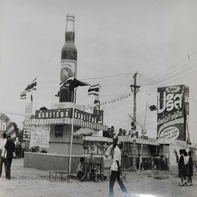
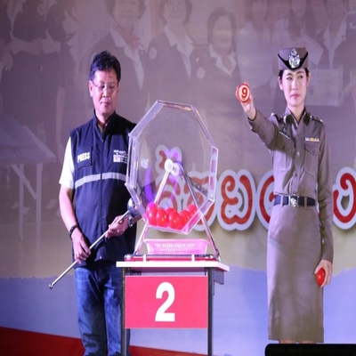
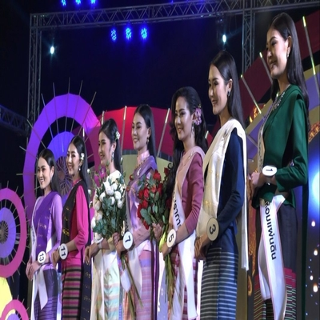

งานฤดูหนาว
ประวัติ
งานฤดูหนาวเป็นงานที่สืบเนื่องมาจาก งานแสดงพืชผล” ซึ่งเป็นงานแสดงผลผลิตของนักเรียน โรงเรียนฝึกหัดครูช้างเผือกในปีพ.ศ. 2474 การจัดงานดังกล่าวได้ชะงักไป ต่อมาพระยาอนุบาลพายัพกิจ ซึ่งเป็นปลัดมณฑลพายัพได้จัดงานขึ้นใหม่และเปลี่ยนมาเป็นงานฤดูหนาว จัดเป็นงานรื่นเริงประจำปีของชาวเชียงใหม่ โดยมีวัตถุประสงค์ในการจัดงาน 3 ประการด้วยกัน คือ ประการที่ 1 เพื่อหาเงินบำรุงด้านการศึกษา ประการที่ 2 เพื่อหาเงินช่วยเหลือด้านการสาธารณสุขโดยเฉพาะเด็กกำพร้า และประการที่ 3 เพื่อหาเงินสนับสนุนการเพาะปลูก

กาชาด
การออกร้านกาชาดในงานครั้งนี้ มีวัตถุประสงค์เพื่อประชาสัมพันธ์ภารกิจของสภากาชาดไทยและเหล่ากาชาดจังหวัดเชียงใหม่ ในการช่วยเหลือบรรเทาทุกข์ราษฎรผู้ยากไร้ ช่วยเหลือผู้ประสบภัย รวมถึงกิจกรรมที่เป็นสาธารณกุศลของจังหวัดเชียงใหม่ โดยกิจกรรมสำคัญประกอบด้วย การจำหน่ายบัตรมัจฉากาชาด ทุกบัตรมีรางวัลเพื่อคืนความสุขให้แก่ประชาชนชาวเชียงใหม่ รางวัลใหญ่ประจำวันเป็นรถจักรยานยนต์ วันละ1 คัน และรางวัลอื่น ๆ เช่นเครื่องใช้ไฟฟ้าอีกมากมาย
OTOP
สำหรับเวทีการประกวดนางสาวเชียงใหม่ ถือเป็นเวทีการประกวดนางงามที่อยู่คู่กับเมืองเชียงใหม่มาอย่างยาวนาน โดยในการประกวดนางสาวเชียงใหม่ในปีนี้ เป็นการประกวดที่จัดต่อเนื่องมาเป็นปีที่ 87 แล้ว กับประกวดภายใต้แนวคิด “ความงามสง่าอย่างมีคุณค่า สู่สากล” ในแต่ละปีจะได้รับความสนใจจากพี่น้องประชาชนและนักท่องเที่ยวเข้ารับชมจำนวนมาก และในปีนี้ยังได้มีการถ่ายทอดสดผ่านเพจเฟซบุ๊ก “กองประกวดนางสาวเชียงใหม่” เพื่อให้ประชาชนที่อยู่ทางบ้านได้รับชมพร้อม ๆ กับผู้ชมในงาน
